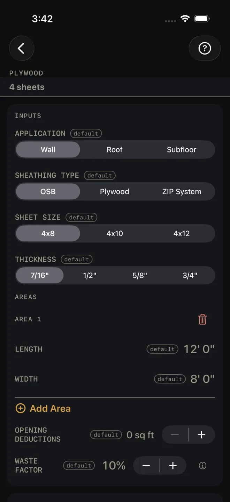
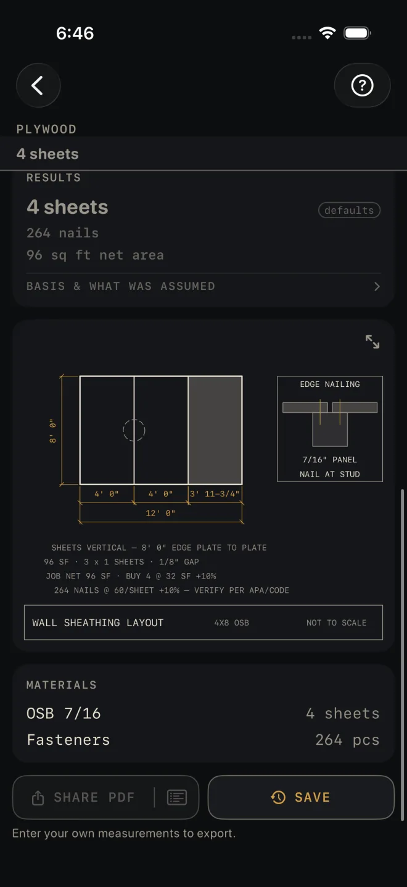

Plywood
What it's for
Counting sheets of sheathing for walls, a roof deck or a subfloor. You list the areas and walk away with a sheet count, a fastener count, ZIP tape and roof clips where they apply, and a layout drawing of the first area with the sheets on it. It is an order quantity, not a code check — the drawing tells you to verify nailing against APA and your code.
Step by step
The example is the screen as it opens: one 12' by 8' wall in 7/16" OSB, 4x8 sheets.

1 2 3 5 7 8- APPLICATION — Wall, Roof or Subfloor. Leave it at Wall. Roof adds one more input, ROOF PITCH — see below.
- SHEATHING TYPE — OSB, Plywood or ZIP System. ZIP System adds seam tape to the results and the material list.
- SHEET SIZE — 4x8, 4x10 or 4x12. The count is by the area of one sheet.
- THICKNESS — 7/16", 1/2", 5/8" or 3/4". This names the panel on the material list. It does not change any quantity.
- Under AREAS, measure each rectangle: LENGTH (12' 0") and WIDTH (8' 0"). For a wall, that is the wall's length and its height, plate to plate. For a subfloor, the floor's length and width.
- Tap Add Area for each further wall, roof plane or floor. The trash can removes one.
- OPENING DEDUCTIONS — the total square feet of openings you want taken out, for all areas together. Tap the number to type it, or use − and + to move it 5 sq ft at a time. It opens at 0 sq ft.
- WASTE FACTOR — the extra for offcuts, in steps of 5%. It opens at 10%.
- Read RESULTS: 4 sheets, 264 nails, 96 sq ft net area.
- Check the layout drawing: two full sheets at 4' 0" and a closer at 3' 11-3/4", 12' 0" overall.
- Read MATERIALS — OSB 7/16, 4 sheets; Fasteners, 264 pcs. BASIS & WHAT WAS ASSUMED states the yields: the pitch factor on roof decking, fasteners per sheet, ZIP tape per sheet and per roll, and H-clips per sheet.
- Save or share the job with the buttons at the foot of the screen.

9 10 11 12Roof decking
With APPLICATION on Roof, ROOF PITCH appears, in inches of rise per 12. Enter each roof plane by its plan size — the footprint measured level, not up the slope. The calculator uses the pitch to work out the sloped area. The material list adds H-clips for the panel edges between rafters.
Reading the results
The headline is sheets to buy: net area plus waste, divided by the area of one sheet and rounded up. The drawing note shows the sum — JOB NET 96 SF · BUY 4 @ 32 SF +10%. It also shows in a strip under the title whenever the results card is scrolled off screen.
Nails is a fastener allowance per sheet with your waste factor added. The drawing note reads 264 NAILS @ 60/SHEET +10% — VERIFY PER APA/CODE. It is a quantity to buy. It is not a nailing schedule, so take edge and field spacing from your plans or the code.
Net area is your areas added up, sloped for a roof, less OPENING DEDUCTIONS, before waste.
Tape appears only with ZIP System: rolls of seam tape and the lineal feet behind them.
There is no pass or fail on this screen, and no result or note turns red.
The drawing is area 1 with the sheets laid on it, the way the notes describe — for the wall, SHEETS VERTICAL — 8' 0" EDGE PLATE TO PLATE with a 1/8" GAP between panels, which is why the last sheet in the example is 3' 11-3/4" and not 4' 0". The shaded sheet is the one you cut. The corner detail shows edge nailing where two panels meet on a stud. Pinch to zoom, or tap the expand button at the top right to open it full screen. See Reading the drawing.
SHARE PDF sends a sheet with the drawing, your inputs and the material list. The list icon at the right end of the same button sends the material list alone. SAVE puts the job in History. SHARE PDF and the list icon in it stay dim until you change at least one input. SAVE stays lit, but while every input is still a default a tap only answers Enter your job's numbers first and saves nothing.
Common mistakes
- Entering a roof plane by its sloped length with ROOF PITCH set. The pitch is applied for you, so the slope would be counted twice. Enter the plan size.
- Entering OPENING DEDUCTIONS as a width or a count. It is square feet, and one figure covers the whole job.
- Expecting openings to come out on their own. Nothing is deducted until you enter it, and the areas have no door or window inputs.
- Changing THICKNESS and expecting the count to move. Only the name on the material list changes.
Related
- Framing — the wall under the sheathing
- Roofing and Roof Rafter
- Floor Joist and Flooring
- Siding
- Cut sheets and 1:1 templates
- Saving and History
- Reading the drawing